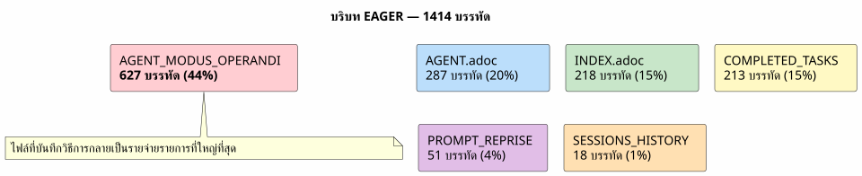
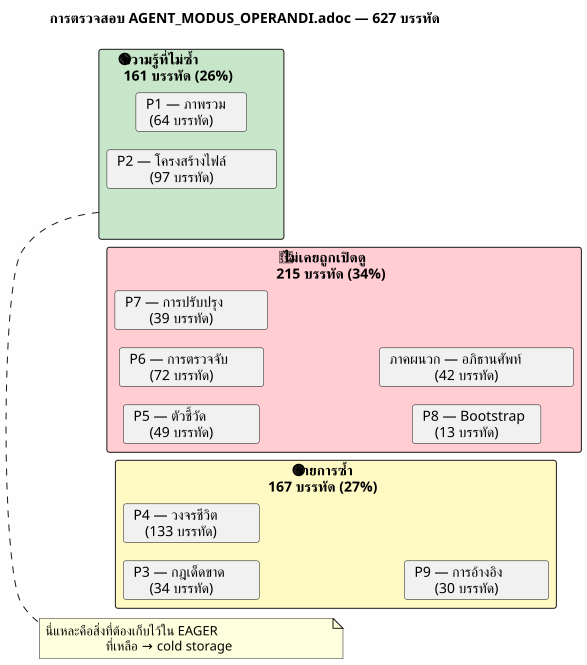
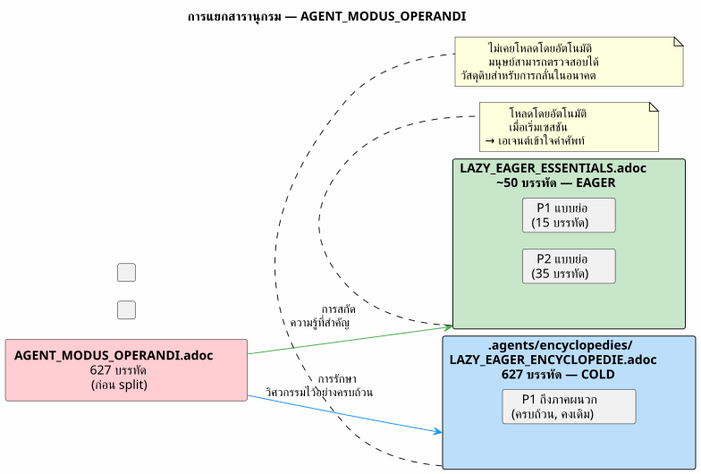
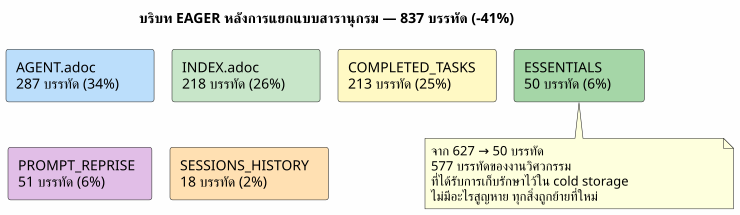
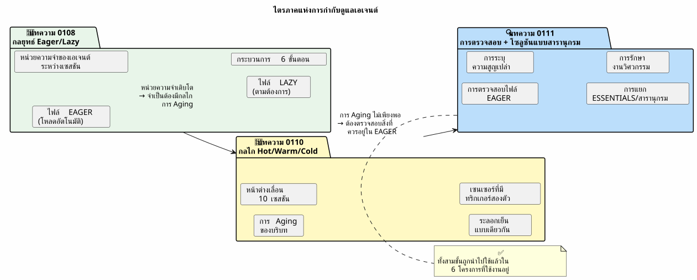
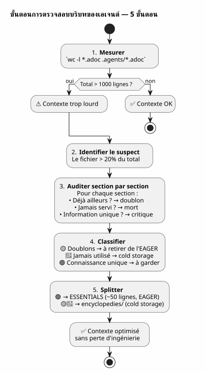
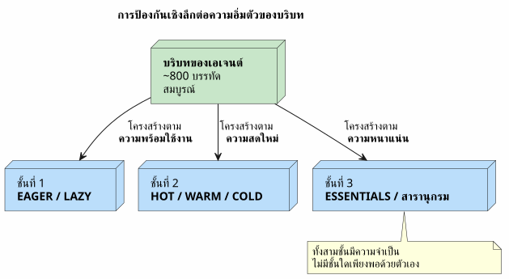

การตรวจสอบบริบทของเอเจนต์: เมื่อการกำกับดูแลของคุณเองกลายเป็นปัญหา — และวิธีแก้ไขโดยไม่สูญเสียสิ่งใดเลย
เผยแพร่เมื่อ 27 April 2026
- ฉาก: เซสชัน 051 มีบางอย่างผิดปกติ
- การตรวจสอบ: วิเคราะห์ 627 บรรทัด
- ความกลัวที่จะสูญเสียวิศวกรรม
- ทางออก: การแยกแบบสารานุกรม
- เนื้อหาของไฟล์ ESSENTIALS
- ผลลัพธ์: -50% ของบริบท EAGER
- ทำไมโฟลเดอร์จึงชื่อ `encyclopedies/
- ความต่อเนื่องตามหลักเหตุผลของซีรีส์
- สิ่งที่ฉันจะทำต่างออกไป
- คู่มือสำหรับการตรวจสอบบริบทของคุณเอง
- ธรรมาภิบาลที่มีชีวิต
- ลิงก์
คุณใช้เวลาหลายสัปดาห์สร้างการกำกับดูแลเอเจนต์ที่ไร้ที่ติ Eager/Lazy ขั้นตอนการจบเซสชัน การสำรองข้อมูลแบบหมุนเวียน ระบบทำงานได้ แต่แล้ววันหนึ่งเอเจนต์ก็ช้าลง คำตอบถูกเจือจางลง คุณวัดได้ว่า 1414 บรรทัดถูกโหลดโดยอัตโนมัติ และที่แย่ที่สุดคือ ตัวการไม่ใช่โค้ด ไม่ใช่ backlog และไม่ใช่คลังเก็บเซสชัน ตัวการคือไฟล์ที่บันทึกวิธีการของคุณ
- ก๊อก
-
Please provide the French text you’d like me to translate into Thai.
ฉาก: เซสชัน 051 มีบางอย่างผิดปกติ
30 เมษายน 2026 เวลา 16:00 น. ฉันกำลังอยู่ในช่วงกลางเซสชันบน`magic-stick`, โปรเจกต์สร้าง ISO Linux แบบไลฟ์ของฉัน เอเจนต์ Opencode โหลดไฟล์ Eager ของฉันโดยอัตโนมัติตามปกติ —AGENT.adoc, PROMPT_REPRISE.adoc, .agents/INDEX.adoc. ทุกอย่างเป็นปกติ
ยกเว้นว่าคำตอบนั้นอ่อนแรง เอเจนต์ใช้เวลาคิดนานขึ้นอีกสองวินาที มันลืมรายละเอียดที่เคยอยู่ตรงหน้าตนเมื่อสามข้อความก่อน นี่ไม่ใช่การแครช ไม่ใช่ข้อผิดพลาด — แต่เป็นการเสื่อมลงอย่างช้า ๆ แบบที่เราไม่ทันสังเกตในทันที
ฉันเคยเจอเรื่องนี้มาแล้วในเซสชัน 048 เมื่อฉันค้นพบว่าไฟล์ด้านการกำกับดูแลมีน้ำหนักรวมสะสมถึง 5200 บรรทัด ตอนนั้นฉันจึงสร้างกรอบแนวคิดกลไก Hot/Warm/Cold ขึ้นมา พร้อมหน้าต่างเลื่อน 10 เซสชัน ระลอกเย็นที่เหมือนกันทุกครั้ง และเซนเซอร์ที่มีตัวกระตุ้นสองตัว ปัญหาได้รับการแก้ไขแล้ว ในทางทฤษฎี
แต่ตอนนี้เราอยู่ที่เซสชัน 051 การหมุนเวียนแบ็กอัปเกิดขึ้นแล้วจริง ๆ — ไฟล์ EAGER ลดจาก 2087 เหลือ 500 บรรทัด ถึงกระนั้นบริบทก็ยังหนักอยู่ มีบางอย่างที่ฉันยังไม่เข้าใจ
ฉันเปิดเทอร์มินัลแล้วพิมพ์:
wc -l AGENT.adoc AGENT_MODUS_OPERANDI.adoc PROMPT_REPRISE.adoc \
.agents/INDEX.adoc .agents/SESSIONS_HISTORY.adoc \
.agents/archives/COMPLETED_TASKS_ARCHIVE_2026-04.adoc 287 AGENT.adoc
627 AGENT_MODUS_OPERANDI.adoc
51 PROMPT_REPRISE.adoc
218 .agents/INDEX.adoc
18 .agents/SESSIONS_HISTORY.adoc
213 .agents/archives/COMPLETED_TASKS_ARCHIVE_2026-04.adoc
1414 total1414 บรรทัด การหมุนเวียนแบ็กอัปได้ตัดทอน INDEX, SESSIONS_HISTORY และ COMPLETED_TASKS ลงอย่างเรียบร้อย — พวกมันสะอาดดี แต่มีช้างในห้องที่ฉันไม่เคยเห็น:627 บรรทัดในไฟล์เดียว`AGENT_MODUS_OPERANDI.adoc`.
ไฟล์นี้คือไฟล์ที่ฉันเขียนในเซสชัน 1 เพื่อบันทึกกลยุทธ์ Eager/Lazy มันคือคู่มือของวิธีการนี้ และมันได้กลายเป็น 44% ของบริบท EAGER โดยตัวมันเอง

ความย้อนแย้งนั้นสมบูรณ์แบบ ไฟล์ที่ออกแบบมาเพื่อ ประหยัด บริบทกลับกลายเป็น ผู้บริโภค บริบทหลัก มันเหมือนกับว่าคู่มือการใช้รถของคุณหนักยิ่งกว่าตัวเครื่องยนต์
การตรวจสอบ: วิเคราะห์ 627 บรรทัด
ฉันตัดสินใจตรวจสอบทีละส่วน ไม่ใช่เพื่อลบ — แต่เพื่อ ทำความเข้าใจ ว่าอะไรสมควรอยู่ใน EAGER และอะไรที่อาจอยู่ที่อื่นได้โดยไม่สูญเสียความรู้
นี่คือโครงสร้างที่แน่นอนของ`AGENT_MODUS_OPERANDI.adoc`และสิ่งที่ฉันพบที่นั่น:
ส่วน |
เส้น |
เนื้อหา |
มีอยู่แล้วใน… |
P1 — ภาพรวม |
64 |
ปัญหาที่แก้ไขแล้ว หลักการพื้นฐาน การเปรียบเทียบแดชบอร์ดกับคู่มือ |
Please provide the French text you’d like me to translate into Thai. |
P2 — โครงสร้างไฟล์ |
97 |
โครงสร้างแบบต้นไม้, นโยบายการโหลด, โหลดอะไรเมื่อใด |
Please provide the French text you’d like me to translate. |
P3 — กฎเด็ดขาด |
34 |
ห้ามใช้ Git ห้ามใช้คำสั่งที่ทำลายข้อมูล ห้ามใช้ข้อมูลลับ |
|
P4 — วงจรชีวิตเซสชัน |
133 |
เทมเพลตการเปิด, กฎการทำงาน, 6 ขั้นตอนสิ้นสุดเซสชัน, รายการตรวจสอบ |
|
P5 — เมตริกและเกณฑ์ |
49 |
เซสชันที่เหมาะสมที่สุด (15-30 นาที, 1-3 ไฟล์), สัญญาณเตือน |
Please provide the French text you’d like me to translate. |
P6 — ประเภทของเซสชัน |
72 |
ตารางการตรวจจับ รูปแบบข้อเสนอ ข้อยกเว้น |
Please provide the French text you’d like me to translate into Thai. |
P7 — การปรับปรุงอย่างต่อเนื่อง |
39 |
ตัวชี้วัดการติดตาม, การทบทวนรายสัปดาห์ |
— |
P8 — รายการตรวจสอบการเริ่มต้น |
13 |
Bootstrap โปรเจกต์ใหม่ |
Please provide the French text you’d like me to translate into Thai. |
P9 — เอกสารอ้างอิง |
30 |
ไฟล์อ้างอิง, แหล่งข้อมูลภายนอก |
|
ภาคผนวก A+B |
42 |
อภิธานศัพท์, ประวัติเวอร์ชัน |
No French text was provided to translate. Please send the source text. |
คำตัดสินเป็นที่สิ้นสุด:
-
รายการซ้ำแบบสมบูรณ์(167 บรรทัด) : P3, P4, P9 — ทุกอย่างอยู่ในแล้ว`AGENT.adoc` ou
INDEX.adoc, บ่อยครั้งแบบคำต่อคำ -
ในทางปฏิบัติไม่เคยถูกปรึกษา(215 บรรทัด) : P5, P6, P7, P8, ภาคผนวก — ของเมตากาเวอร์แนนซ์ที่ไม่เคยถูกใช้ในเซสชันใดเลย
-
ความรู้เฉพาะ(161 บรรทัด) : P1 และ P2 — คำศัพท์ LAZY/EAGER, การเปรียบเทียบ, นโยบายการโหลด
จาก 627 บรรทัด,382 เป็นเสียงรบกวน. และ 382 บรรทัดเหล่านี้ถูกโหลด ทุกครั้งที่เริ่มเซสชัน ถูกใช้โดยเอเจนต์ ทำให้ความสนใจของมันเจือจางก่อนที่ฉันจะพูดสวัสดีด้วยซ้ำ

แผนภาพนี้คือกุญแจของทุกสิ่ง ข้อมูลซ้ำ (สีเหลือง) เป็นเพียงสัญญาณรบกวนล้วน ๆ — เอเจนต์อ่านสิ่งเหล่านั้นสองครั้ง ในไฟล์ที่แตกต่างกันสองไฟล์ ส่วนสิ่งที่ไม่เคยถูกตรวจดู (สีแดง) คือเอกสารที่ตายแล้ว — เขียนขึ้นอย่างพิถีพิถัน แต่ไม่เคยถูกนำไปใช้ มีเพียงสีเขียวเท่านั้นที่บรรจุความรู้ซึ่งเอเจนต์ไม่สามารถหาได้จากที่อื่น
ความกลัวที่จะสูญเสียวิศวกรรม
ในขั้นนี้ ฉันมีหลักฐานอยู่ตรงหน้าแล้ว: ฉันต้องลด`AGENT_MODUS_OPERANDI.adoc`แต่ฉันลังเล
ไฟล์นี้ ฉันเขียนด้วยมือ แต่ละส่วนเป็นผลลัพธ์ของบทเรียนที่ได้เรียนรู้ในเซสชันจริง ส่วน P3 เกิดจาก`rm -rf`โดยบังเอิญบน`bakery-plugin`ซึ่งทำให้ฉันเสียโทเค็น Firebase จริง ๆ ส่วน P4 เป็นผลจากสิบห้าเซสชันที่ฉันลืมเก็บถาวรและหลุดประเด็น กระบวนการ 6 ขั้นตอนไม่ได้มาจากหนังสือ — มันมาจากความเจ็บปวด
การลบส่วนเหล่านี้ ก็เท่ากับทิ้งประวัติวิศวกรรมของตัวผมเอง บทเรียนที่ทำให้เกิดส่วนเหล่านี้ เซสชันที่ผมค้นพบมัน ความผิดพลาดที่ผมไม่อยากทำซ้ำอีกเลย นี่ไม่ใช่ข้อความ — มันคือประสบการณ์ที่ตกผลึก
ณ จุดนี้เองที่ฉันกำหนดหลักการซึ่งจะนำทางแนวทางแก้ไข:
Please provide the French text you’d like me to translate into Thai. ห้ามลบเด็ดขาด ย้ายตำแหน่งเสมอความรู้ไม่จำเป็นต้องหายไปจากโปรเจกต์ แค่ต้องไม่ถูกโหลดโดยอัตโนมัติเมื่อไม่จำเป็น Please provide the French text you’d like me to translate to Thai.
ทางออก: การแยกแบบสารานุกรม
รูปแบบที่ฉันเสนอนั้นเรียบง่ายและได้แรงบันดาลใจจากวิธีที่วิกิพีเดียเติบโตขึ้น: เมื่อบทความยาวเกินไป เราไม่ตัดมันทิ้ง — เราสร้างบทความแยกที่มีรายละเอียดและเก็บบทสรุปไว้ในบทความหลัก
สำหรับ`AGENT_MODUS_OPERANDI.adoc`, ซึ่งให้:
-
แยกออก161 บรรทัดความรู้ที่ไม่ซ้ำกัน (P1 + P2) ในไฟล์ใหม่`LAZY_EAGER_ESSENTIALS.adoc`— กระชับเหลือ ~50 บรรทัด โดยเป็น EAGER อย่างเคร่งครัด
-
เปลี่ยนชื่อ
AGENT_MODUS_OPERANDI.adocen.agents/encyclopedies/LAZY_EAGER_ENCYCLOPEDIE.adoc— ไฟล์ต้นฉบับ 627 บรรทัด ที่เก็บรักษาไว้ อย่างสมบูรณ์ ในที่จัดเก็บแบบเย็น -
ห้ามชาร์จไฟล์สารานุกรมโดยอัตโนมัติ — มันมีไว้สำหรับมนุษย์ สำหรับการกลั่นกรองในอนาคต สำหรับเอเจนต์ที่เราจะเรียกใช้ในอีกหกเดือนด้วยโมเดลที่ดีกว่า

ชื่อ`encyclopedies/`ไม่ใช่เรื่องเล็กน้อย สารานุกรมไม่ใช่แฟ้มจดหมายเหตุ — แต่เป็นชุดความรู้ที่จัดระเบียบแล้ว ค้นดูได้แต่พกพาไม่ได้ เราไม่อ่าน Encyclopédie Universalis บนรถไฟใต้ดิน เราเก็บมันไว้ในห้องสมุด และไปที่นั่นเมื่อมีคำถามที่เฉพาะเจาะจง
นี่คือหน้าที่ของโฟลเดอร์นี้อย่างแท้จริง: คลังอ้างอิงแบบเย็นที่มีโครงสร้างและครอบคลุมครบถ้วน — ซึ่งเอเจนต์จะไม่แตะต้องโดยอัตโนมัติ
เนื้อหาของไฟล์ ESSENTIALS
นี่คือลักษณะจริง ๆ ของไฟล์ใหม่`LAZY_EAGER_ESSENTIALS.adoc`, สกัดและย่อให้กระชับจาก P1 และ P2:
= Stratégie LAZY/EAGER — Principes Essentiels
[abstract]
Ce fichier définit la stratégie de gestion du contexte agent.
Chargé automatiquement (EAGER) en début de session.
== Principes
|===
| EAGER | LAZY
| Tableau de bord | Manuel du propriétaire
| Chargé automatiquement | Chargé sur demande
| <= 100 lignes, <= 10k tokens | Illimité, détaillé
| Règles absolues, mission courante | Archives, historique, références
|===
== Politique de Chargement
|===
| Fichier | Type | Quand charger
| PROMPT_REPRISE.adoc | EAGER | Début session (auto)
| *_ESSENTIALS.adoc | EAGER | Début session si EPIC active
| .agents/INDEX.adoc | EAGER | Début session (auto)
| *_REFERENCE.adoc | LAZY | Sur besoin (détails architecture)
| .agents/sessions/N-*.adoc | LAZY | Sur demande (détails session)
| .agents/encyclopedies/*.adoc | COLD | Jamais auto (humain seulement)
|===
== Comment l'Agent Sait Quoi Charger
Début session → PROMPT_REPRISE + INDEX + ESSENTIALS actifs.
Besoin de détails → charger les *_REFERENCE et sessions/ en LAZY.
Connaissance froide → encyclopedies/, jamais automatique.ห้าสิบบรรทัด. นั่นคือทั้งหมดที่เอเจนต์ต้องการเพื่อเข้าใจกลไก ส่วนที่เหลือทั้งหมด — ประวัติของบทเรียน การเปรียบเทียบโดยละเอียด ขั้นตอนทีละขั้น ภาคผนวก — อยู่ในสารานุกรม
และที่สำคัญที่สุด:ไม่มีอะไรถูกลบ. เส้นงานวิศวกรรม 627 เส้นยังอยู่ตรงนั้น ใน`.agents/encyclopedies/LAZY_EAGER_ENCYCLOPEDIE.adoc`. พวกมันเพียงถูกจัดเก็บไว้ในชั้นหนังสือแทนที่จะวางบนโต๊ะทำงาน
ผลลัพธ์: -50% ของบริบท EAGER
ก่อนการแยก:
287 AGENT.adoc
627 AGENT_MODUS_OPERANDI.adoc
51 PROMPT_REPRISE.adoc
218 .agents/INDEX.adoc
18 .agents/SESSIONS_HISTORY.adoc
213 .agents/archives/COMPLETED_TASKS_ARCHIVE_2026-04.adoc
1414 totalหลังจากการแยก:
287 AGENT.adoc
50 LAZY_EAGER_ESSENTIALS.adoc ← remplace 627 lignes
51 PROMPT_REPRISE.adoc
218 .agents/INDEX.adoc
18 .agents/SESSIONS_HISTORY.adoc
213 .agents/archives/COMPLETED_TASKS_ARCHIVE_2026-04.adoc
837 total ← -41%
ผู้ใช้ทรัพยากรมากที่สุด (AGENT_MODUS_OPERANDI, 627 บรรทัด) ถูกแทนที่ด้วยไฟล์ขนาด 50 บรรทัด ผลที่ได้เกิดขึ้นทันที: ปลดปล่อยบริบทได้ 577 บรรทัด เอเจนต์หายใจได้
และใน`.agents/encyclopedies/`, ไฟล์ต้นฉบับ 627 บรรทัดรออยู่ ยังสมบูรณ์ พร้อมทุกส่วนของมัน — รวมถึงส่วนที่เป็นข้อมูลซ้ำ รวมถึงส่วนที่ไม่เคยถูกใช้งานเลย เพราะสักวันหนึ่ง โมเดลที่ดีกว่าหรือนักวิทยาศาสตร์ข้อมูลที่เป็นมนุษย์จะอยากนำแง่มุมเหล่านี้ ความซ้ำซ้อนที่ยอมรับไว้เหล่านี้ และบทเรียนที่ได้เรียนรู้เหล่านี้มาเปรียบเทียบไขว้กัน และในวันนั้น วัตถุดิบก็จะอยู่ตรงนั้น
ทำไมโฟลเดอร์จึงชื่อ `encyclopedies/
การเลือกชื่อไม่ใช่เรื่องความสวยงามภายนอก มันเข้ารหัสปรัชญาของกลไกนั้น
หนึ่ง จดหมายเหตุ (archives/) มีข้อมูลย้อนหลังที่จัดเรียงตามลำดับเวลา — เช่น COMPLETED_TASKS รายเดือน แบ็กอัป หนึ่งรายการ (backup/) คือสแนปช็อตที่ระบุเวลา — สำเนาสำรองของสถานะในอดีต
สารานุกรม เป็นสิ่งที่แตกต่างออกไป มันคือการรวบรวมความรู้เฉพาะเรื่อง ซึ่งจัดโครงสร้างตามหัวข้อ ครอบคลุมครบถ้วนแต่ไม่เรียงตามลำดับเชิงเส้น เราไม่ได้อ่านสารานุกรมตั้งแต่ต้นจนจบ แต่เราดำดิ่งเข้าไปเพื่อตอบคำถามที่เจาะจงข้อหนึ่ง
นี่คือสัญญาของแฟ้มนี้อย่างแท้จริง:
แฟ้ม |
บทบาท |
การเข้าถึง |
ความละเอียด |
|
ข้อมูลย้อนหลัง (งานที่เสร็จสิ้นต่อเดือน) |
LAZY ที่มีโครงสร้าง |
ตามลำดับเวลา |
|
สแนปช็อตแบบเย็น (ชุดละ 10 เซสชัน) |
COLD, สำเนาฉบับสมบูรณ์ |
ตามลำดับเวลา |
|
ความรู้เชิงหัวข้ออย่างครอบคลุม (ระเบียบวิธี, รูปแบบ) |
COLD ไม่เคยเป็นแบบอัตโนมัติ |
หัวข้อ |
การแยกความแตกต่างนี้ช่วยหลีกเลี่ยงการเป็นที่รวมทุกอย่างแบบไม่แยกประเภท แต่ละไฟล์รู้ว่าตนควรอยู่ที่ไหนตาม สิ่งที่มันบรรจุอยู่ ไม่ใช่ตาม เวลาที่มันถูกสร้างขึ้น
ความต่อเนื่องตามหลักเหตุผลของซีรีส์
หากคุณได้อ่านบทความสองชิ้นแรกแล้ว นี่คือวิธีที่ชิ้นส่วนทั้งสามประกอบเข้าด้วยกัน:

-
0108ตอบว่า: « จะให้หน่วยความจำแก่เอเจนต์ระหว่างสองเซสชันได้อย่างไร?
-
0110ตอบว่า: «จะป้องกันไม่ให้ความทรงจำนี้ทำให้ตัวแทนหายใจไม่ออกได้อย่างไร
-
0111ตอบว่า: « แล้วถ้าปัญหาไม่ใช่ขนาดของอาร์ไคฟ์ แต่เป็นสิ่งที่เรา เลือก ที่จะใส่ใน EAGER ล่ะ ?
บทความแรกสร้างโครงสร้าง บทความที่สองเพิ่มกลไกการชรา บทความที่สามตรวจสอบเนื้อหา — และค้นพบว่าวิธีวิทยาเองได้กลายเป็นปัญหา
สิ่งที่ฉันจะทำต่างออกไป
เมื่อมองย้อนกลับไป ฉันเห็นข้อผิดพลาดในการออกแบบในตอนแรก`AGENT_MODUS_OPERANDI.adoc`ถูกสร้างขึ้นเป็นเอกสารเดียว — แถลงการณ์ฉบับหนึ่ง นั่นเป็นวิธีที่ถูกต้องในการจัดระบบความคิดให้เป็นทางการ แต่เมื่อความคิดถูกทำให้เป็นทางการแล้ว เอกสารนั้นควรถูกแยกออกทันที: ส่วนสำคัญไว้ใน EAGER ส่วนที่ละเอียดครบถ้วนไว้ใน cold
ผมไม่ได้ทำอย่างนั้นเพราะผมภาคภูมิใจในเอกสารนี้ 627 บรรทัดของงานวิศวกรรมล้วน ๆ ที่เขียนด้วยมือ แต่ละส่วนล้วนเป็นผลจากบทเรียนในเซสชัน มันเป็นผลงานของผม และเหมือนนักเขียนทุกคน ผมลำบากใจที่จะตัดมันออกเป็นส่วน ๆ
บทเรียน:ไม่ใช่เพราะเอกสารดีแล้วจะต้องโหลดโดยอัตโนมัติ. คุณภาพของเนื้อหาไม่มีความเกี่ยวข้องใด ๆ กับความเกี่ยวข้องของเนื้อหาต่อบริบทเฉพาะหน้าของเอเจนต์
วันนี้ กฎนั้นง่ายมาก: เอกสารใดก็ตามที่มีมากกว่า 100 บรรทัดในบริบท EAGER ถือว่าน่าสงสัย ควรได้รับการตรวจสอบ ไม่ใช่การตัดสินลงโทษ — แต่เป็นการตรวจสอบ และคำถามไม่เคยใช่ « ควรลบมันหรือไม่? » แต่เป็น « ควรโหลดมันในทุกเซสชันหรือไม่?
คู่มือสำหรับการตรวจสอบบริบทของคุณเอง
หากคุณได้ติดตามสองบทความแรกและได้วางระบบการกำกับดูแลแบบ Eager/Lazy ของคุณเองแล้ว นี่คือกระบวนการตรวจสอบในห้าขั้นตอน:
-
วัดThe text to translate is missing — please provide the French source text.`wc -l`บนไฟล์ EAGER ทั้งหมดของคุณ ยอดรวมควรน้อยกว่า 1000 บรรทัด
-
ระบุสิ่งที่ใหญ่ที่สุด: ไฟล์ที่มีขนาดเกิน 20% ของทั้งหมดคือผู้ต้องสงสัยอันดับหนึ่ง
-
ตรวจสอบทีละส่วน: สำหรับแต่ละส่วน ให้ถามตัวเองว่า «ข้อมูลนี้อยู่ที่อื่นแล้วหรือไม่? เอเจนต์อ่านข้อมูลนี้ในไฟล์อื่นแล้วหรือยัง? ข้อมูลนี้ถูกใช้งานใน 5 เซสชันล่าสุดหรือไม่?
-
จำแนกประเภท: รายการซ้ำ, ไม่เคยถูกใช้งาน, ความรู้เฉพาะตัว
-
แยกหรือย้ายที่ตั้ง: สิ่งที่เป็นเอกลักษณ์และสำคัญยิ่ง → ESSENTIALS แบบกะทัดรัด ทุกอย่างที่เหลือ →
encyclopedies/.

ขั้นตอนนี้ใช้เวลา 15 นาที ในโปรเจกต์ที่มี 50 เซสชัน จะช่วยประหยัดโทเคนหลายร้อยโทเคนต่อเซสชันในอนาคต ROI เกิดขึ้นทันที
ธรรมาภิบาลที่มีชีวิต
สิ่งที่บทความชุดสามตอนนี้สอนฉันคือ การกำกับดูแลเอเจนต์ไม่ใช่ผลิตภัณฑ์ที่เสร็จสมบูรณ์ มันคือสิ่งมีชีวิต. เธอเติบโตไปพร้อมกับโครงการ เธอเผชิญกับโรคจากการเจริญเติบโต เธอจำเป็นต้องได้รับการตรวจสุขภาพเป็นประจำ
เซสชัน 048 เผยให้เห็นว่าคลังเอกสารบวมขึ้น เซสชัน 051 เผยให้เห็นว่าระเบียบวิธีเองก็บวมขึ้นเช่นกัน เซสชัน 060 น่าจะเผยให้เห็นสิ่งอื่นอีก นั่นเป็นเรื่องปกติ นั่นเป็นเรื่องที่ดี การกำกับดูแลที่ไม่เคยตั้งคำถามกับตนเองเลยคือการกำกับดูแลที่ตายแล้ว
กลไกทั้งสามที่นำมาใช้ — Eager/Lazy, Hot/Warm/Cold, split encyclopédique — ประกอบกันเป็นระบบป้องกันเชิงลึกต่อการอิ่มตัวของบริบท ไม่มีกลไกใดเพียงพอโดยลำพัง เมื่ออยู่ร่วมกัน กลไกเหล่านี้จึงเสริมซึ่งกันและกัน :
-
กระตือรือร้น/ขี้เกียจจัดโครงสร้างข้อมูล ตามความพร้อมใช้งาน
-
ร้อน/อุ่น/เย็นจัดโครงสร้างข้อมูล ตามความสดใหม่
-
การตรวจประเมินเชิงสารานุกรมจัดโครงสร้างข้อมูล ตามความหนาแน่น

ด้วยเลเยอร์ทั้งสามนี้ บริบทของเอเจนต์บน`magic-stick`ได้ลดลงจาก 2087 บรรทัด (ก่อนการปรับให้เหมาะสมใด ๆ) เหลือประมาณ 800 บรรทัด — เป็นการหารด้วย 2.6 โดยไม่สูญเสียเอกสารแม้แต่บรรทัดเดียว ไม่สูญเสียไฟล์เก็บเซสชันแม้แต่ไฟล์เดียว และไม่สูญเสียบทเรียนที่ได้เรียนรู้แม้แต่ข้อเดียว
ทุกอย่างอยู่ที่นี่ เพียงแค่จัดระเบียบได้ดีขึ้น
ลิงก์
-
บทความ 0108 — กลยุทธ์ Eager/Lazy :กำกับดูแลเอเจนต์ AI ด้วย AsciiDoc
-
บทความ 0110 — กลไก Hot/Warm/Cold :Sliding Window และคลื่นความเย็น
-
เว็บไซต์ของฉัน : https://cheroliv.com
-
โครงการ`magic-stick`: https://github.com/cheroliv/magic-stick
ความรู้ไม่จำเป็นต้องหายไป แค่ต้องไม่ถูกโหลดเมื่อไม่จำเป็น